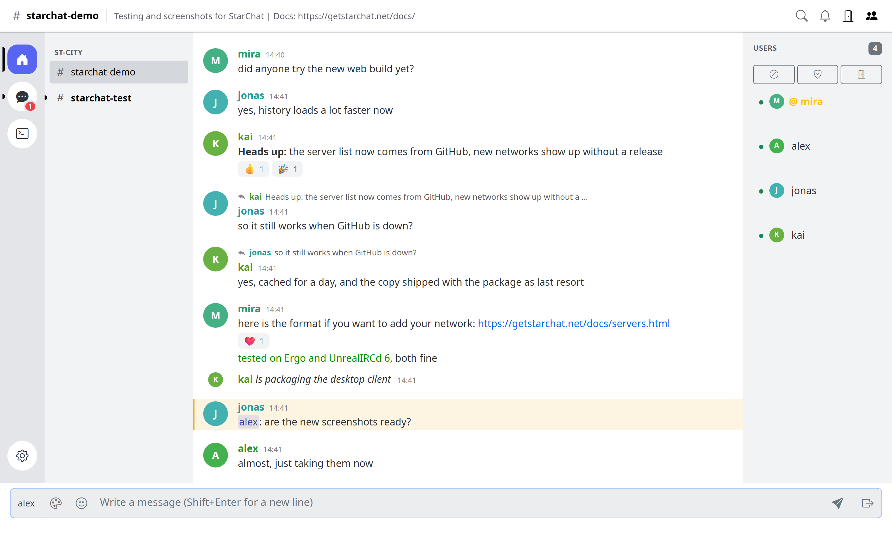

A modern chat that nobody owns.
StarChat is an open source IRC client for the browser, the desktop and Android.
IRC has been around since 1988 and no company owns it. Anyone can run a network. IRCv3 added history, reactions, replies and read markers, and StarChat uses them on every network that supports them.
- Runs on
- Any modern browser, Windows, Linux and macOS. Android is in testing for Google Play.
- Networks
- Any IRC network. The web version needs WebSocket support (Ergo, UnrealIRCd 6, InspIRCd).
- License
- MIT. Source code on GitHub.

What it does
Any IRC network
Pick one from the server list or type in a domain. The desktop app also connects over plain TCP.
IRCv3
History, reactions, replies, read markers shared between devices, deleting your own messages.
Accounts
Log in with your account or join as a guest.
Keyboard
Ctrl+P jumps to any channel, Ctrl+F searches. The usual slash commands work.
Embeddable
Put the chat into your own site with one function call. Your users can be logged in by the site.
Light and dark
In English and German.
Networks can offer more
With a small file on its domain, a network can add profiles, friends, uploads, voice chat and push notifications. Networks without it work as plain IRC. There is no central StarChat server.